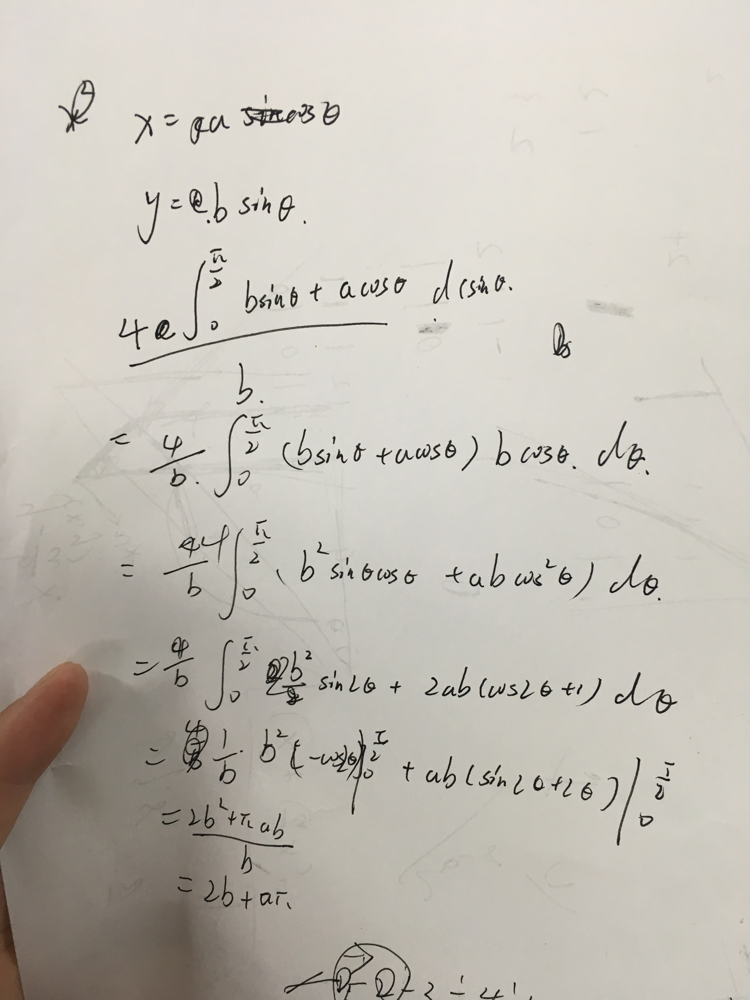

2018 Multi-University Training Contest 6
Contents
A. oval-and-rectangle
题意：
给出一个椭圆的
思路：
求出每种矩形的周长，除以

Code
#include <bits/stdc++.h>
using namespace std;
const double PI = acos(-1.0);
double a, b;
void RUN() {
int t;
scanf("%d", &t);
while (t--) {
scanf("%lf %lf", &a, &b);
double ans = 2 * b + a * PI;
printf("%.6f\n", ans - 5e-7);
}
}
int main() {
#ifdef LOCAL_JUDGE
freopen("Text.txt", "r", stdin);
#endif // LOCAL_JUDGE
RUN();
#ifdef LOCAL_JUDGE
fclose(stdin);
#endif // LOCAL_JUDGE
return 0;
}
B. bookshelf
留坑。
C. Ringland
留坑。
D. Shoot Game
留坑。
E. black-and-white
留坑。
F. foam-transformation
留坑。
G. Variance-MST
留坑。
H. Rectangle Outline
留坑。
I. Werewolf
题意：
狼人杀游戏，每个人都会指明另一个人的身份，村民一定不会说谎，狼人可能说谎，求确定的村民和狼人。
思路：
如果全都是狼人，那么逻辑一定成立，所以确定的村民数量为
对于狼人可以通过反证法证明，若
Code
#include <bits/stdc++.h>
using namespace std;
const int maxn = (int)1e5 + 10;
int n;
int ans1, ans2;
int fa[maxn];
char str[110];
vector<pair<int, int> > wolf;
vector<int> human[maxn];
void Init(int n) {
ans1 = ans2 = 0;
for (int i = 0; i <= n; ++i) fa[i] = i, human[i].clear();
wolf.clear();
}
int find(int x) {
return x == fa[x] ? fa[x] : fa[x] = find(fa[x]);
}
void mix(int x, int y) {
x = find(x), y = find(y);
if (x != y) {
fa[x] = y;
}
}
bool same(int x, int y) {
return find(x) == find(y);
}
void DFS(int u) {
for (auto it : human[u]) {
++ans2;
DFS(it);
}
}
void RUN() {
int t;
scanf("%d", &t);
while (t--) {
scanf("%d", &n);
Init(n);
for (int i = 1; i <= n; ++i) {
int u;
scanf("%d %s", &u, str);
if (str[0] == 'v') {
mix(i, u);
human[u].push_back(i);
} else {
wolf.push_back(make_pair(i, u));
}
}
for (auto it : wolf) {
if (same(it.first, it.second)) {
++ans2;
DFS(it.second);
}
}
printf("%d %d\n", ans1, ans2);
}
}
int main() {
#ifdef LOCAL_JUDGE
freopen("Text.txt", "r", stdin);
#endif // LOCAL_JUDGE
RUN();
#ifdef LOCAL_JUDGE
fclose(stdin);
#endif // LOCAL_JUDGE
return 0;
}
J. Chopping hands
留坑。
K. sacul
留坑。
L. Pinball
题意：
一个小球垂直下落在一个斜板上，求在斜板上弹几次。
思路：
分解小球运动（物理题）
Code
#include <bits/stdc++.h>
using namespace std;
const double g = 9.8;
double a, b, x, y;
void RUN() {
int t;
scanf("%d", &t);
while (t--) {
scanf("%lf %lf %lf %lf", &a, &b, &x, &y);
x = -1.0 * x;
double Tan = b / a;
double arc = atan(Tan);
double vx = g * sin(arc);
double vy = g * cos(arc);
double h = (y - b / a * x) * cos(arc);
double dis = (y - b / a * x) * sin(arc) + x / cos(arc);
double t = sqrt(2 * dis / vx);
double per = sqrt(2 * h / vy);
int ans = 0;
if (t > per) {
ans++;
t -= per;
}
ans += t / (per * 2);
printf("%d\n", ans);
}
}
int main() {
#ifdef LOCAL_JUDGE
freopen("Text.txt", "r", stdin);
#endif // LOCAL_JUDGE
RUN();
#ifdef LOCAL_JUDGE
fclose(stdin);
#endif // LOCAL_JUDGE
return 0;
}
Last update: March 28, 2022
Created: March 28, 2022
Created: March 28, 2022